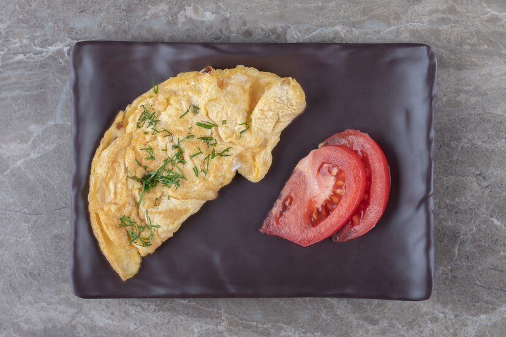

Algae Omellete

Description:
Made with a combination of microalgae and cricket flour, this omelette is high in protein and omega-3 fatty acids.
Ingredients
- 3 eggs
- 1/4 cup microalgae
- 1/4 cup cricket flour
- Salt and pepper, to taste
Direction
- In a mixing bowl, whisk together the eggs, microalgae, cricket flour, salt, and pepper.
- Heat a skillet over medium-high heat and add a small amount of oil or butter.
- Pour the egg mixture into the skillet and cook for 2-3 minutes, or until the bottom is set.
- Flip the omelette and cook for an additional 1-2 minutes, or until fully cooked and serve hot.